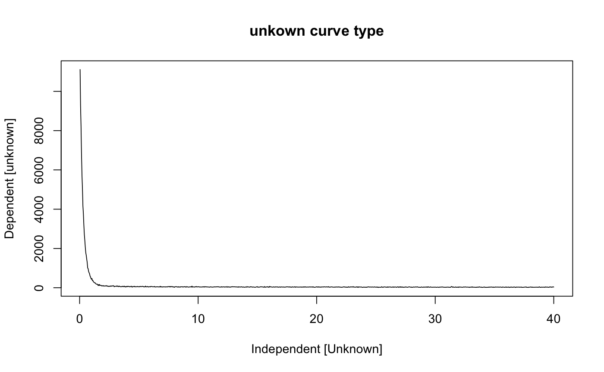

R/plot_RLum.Data.Curve.R
plot_RLum.Data.Curve.RdThe function provides a standardised plot output for curve data of an
RLum.Data.Curve S4-class object.
plot_RLum.Data.Curve(
object,
par.local = TRUE,
norm = FALSE,
smooth = FALSE,
...
)RLum.Data.Curve (required):
S4 object of class RLum.Data.Curve
logical (with default):
use local graphical parameters for plotting, e.g. the plot is shown in one
column and one row. If par.local = FALSE, global parameters are inherited.
logical character (with default): allows curve normalisation to the
highest count value ('default'). Alternatively, the function offers the
modes "max", "min" and "huot" for a background corrected normalisation, see details.
logical (with default): provides an automatic curve smoothing based on zoo::rollmean
further arguments and graphical parameters that will be passed
to the plot function
Returns a plot.
Only single curve data can be plotted with this function.Arguments according to plot.
Curve normalisation
The argument norm normalises all count values, to date the following
options are supported:
norm = TRUE or norm = "max": Curve values are normalised to the highest
count value in the curve
norm = "last": Curves values are normalised to the last count value
(this can be useful in particular for radiofluorescence curves)
norm = "huot": Curve values are normalised as suggested by Sébastien Huot
via GitHub:
$$
y = (observed - median(background)) / (max(observed) - median(background))
$$
The background of the curve is defined as the last 20 % of the count values of a curve.
Not all arguments of plot will be passed!
0.2.6
Kreutzer, S., 2023. plot_RLum.Data.Curve(): Plot function for an RLum.Data.Curve S4 class object. Function version 0.2.6. In: Kreutzer, S., Burow, C., Dietze, M., Fuchs, M.C., Schmidt, C., Fischer, M., Friedrich, J., Mercier, N., Philippe, A., Riedesel, S., Autzen, M., Mittelstrass, D., Gray, H.J., Galharret, J., 2023. Luminescence: Comprehensive Luminescence Dating Data Analysis. R package version 0.9.22. https://CRAN.R-project.org/package=Luminescence
##plot curve data
#load Example data
data(ExampleData.CW_OSL_Curve, envir = environment())
#transform data.frame to RLum.Data.Curve object
temp <- as(ExampleData.CW_OSL_Curve, "RLum.Data.Curve")
#plot RLum.Data.Curve object
plot_RLum.Data.Curve(temp)
